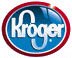

If you are not involved with this program and want to help, just apply for a Reward Card at Tom Thumb and ask them to apply code # 6366 to the card.

Soccer America and Kroger are in partnership with the Kroger Share Card
Program. Each quarter, Kroger donates 1% of all total dollars spent by
Soccer America families, friends and relatives. The third quarter of 2003, the Soccer America group spent $1,069.00. Kroger will be cutting a
check in the amount of $10.69. Thank you everyone for your support!!
If you are interested in supporting Soccer America, contact Kroger on your next shopping visit and tell them that our code is K92983.
Tim Trevino
Soccer America Director of Coaching
|
All Content © 1999-2001 USA Soccer, Inc. All Source Code © 1999-2001 Grushka, Inc. All rights reserved. |